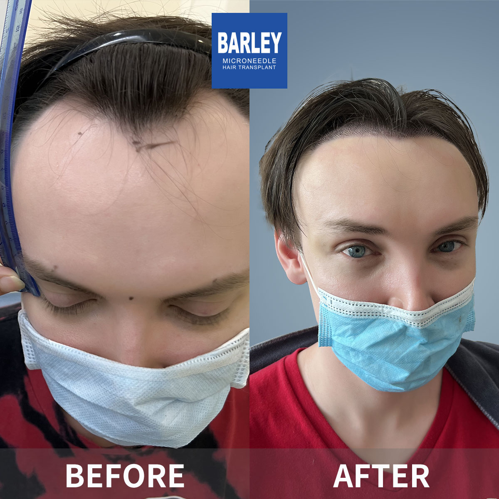
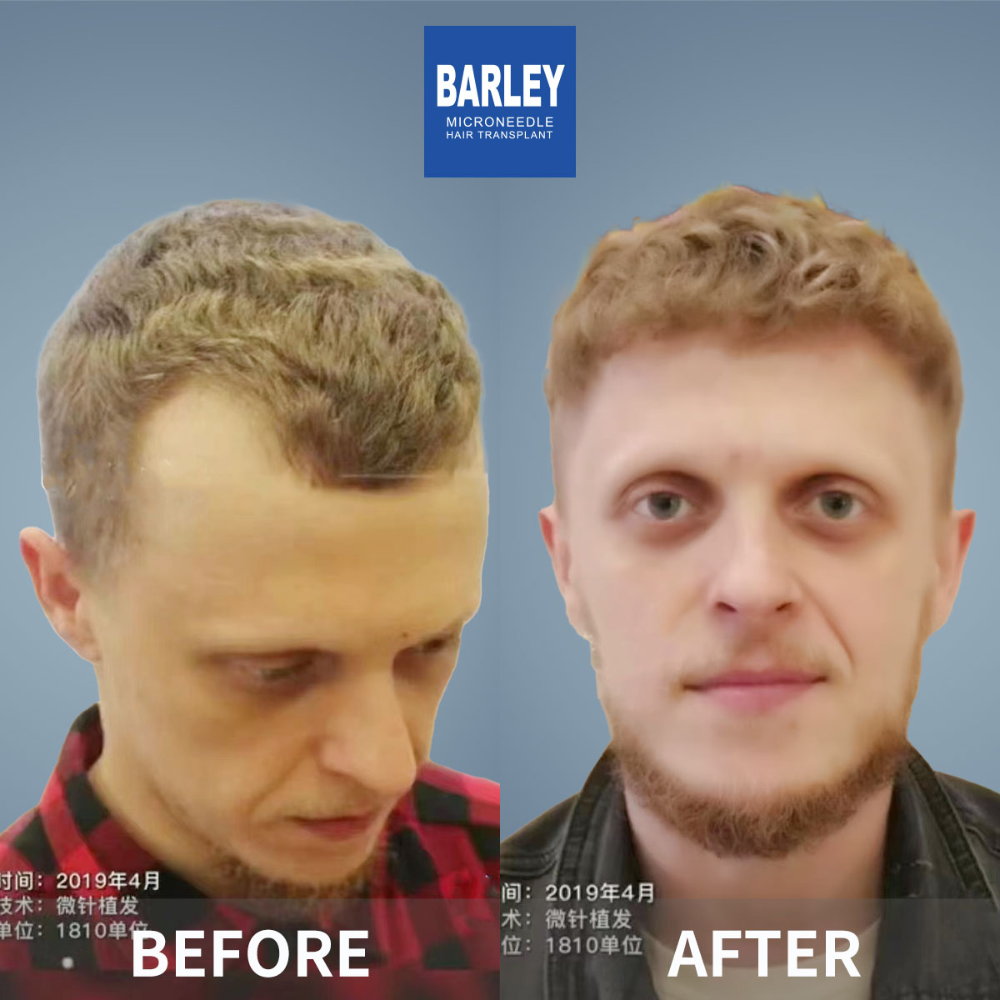
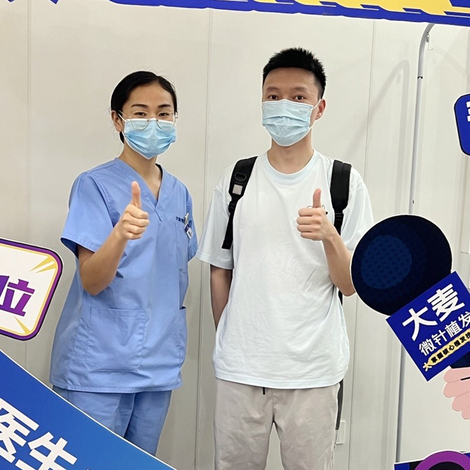
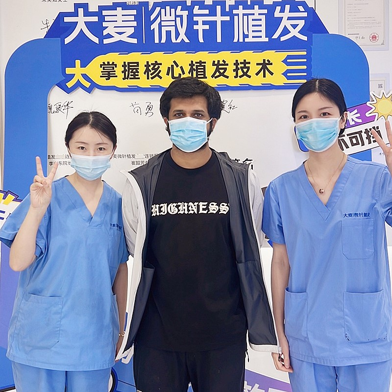

Personalized hairline design with advanced microneedle technology for natural, lasting results

Our hairline transplant procedure is the gold standard in hair restoration. With over 18 years of experience and 100,000+ successful procedures, we specialize in creating natural-looking hairlines that complement your facial features and restore your youthful appearance.
Personalized hairline design based on facial proportions and golden ratio
6-step process designed for optimal results and comfort
Expert evaluation and customized hairline design based on your facial features, age, and goals
Gentle FUE extraction of healthy donor follicles from the back/sides of your scalp
Specialized processing and sorting of follicles for optimal placement
Precision incisions following natural hair growth direction and density
Microneedle placement with patented implant pen for perfect results
Comprehensive care instructions and 12-month follow-up program
Industry leader with proven results
Pioneer and leader in microneedle hair transplant technology since 2006
Across major cities in China, all with the same high standards
Innovative microneedle and implant pen technology for superior results
Trusted by patients from around the globe for life-changing results
Full English support for international patients throughout treatment
State-of-the-art facilities and strict safety protocols for your peace of mind
See the amazing transformations our patients have achieved






Moments captured with our satisfied patients

Posing with our medical team after successful procedure

Celebrating fantastic results with our doctors

Another satisfied patient shares their joy

Patient with our specialist before discharge

Happy patient with Dr. Chen post-treatment

Excited patient showing their new look
Hear from our satisfied patients around the world
"I was so self-conscious about my receding hairline! Barley's hairline transplant gave me a natural, perfect hairline that completely transformed my appearance! I'm so happy!"
"The doctor designed my hairline specifically for my face shape! It looks completely natural - my friends can't even tell I had a transplant! I feel so much more confident now!"
"My hairline was receding for years, and I finally decided to do something about it! The results are amazing! I can style my hair any way I want now - no more hiding!"
"I searched Google for months before choosing Barley for my hairline restoration! The 360-degree implant pen technology made it look so natural! I'm so glad I did it!"
"The microneedle hairline transplant gave me such a natural-looking result! There's no scarring, and the density is perfect! People tell me I look 10 years younger!"
"My hairline transplant completely restored my confidence! The doctor was so skilled, and the recovery was quick! I can't stop looking at my new hair - it's perfect!"
Experience our modern and comfortable facilities

Our state-of-the-art facility

Relax in our premium lounge

Sterile and advanced

Private and professional

Comfortable post-op space

Welcoming entrance
Find answers to common questions about hair transplantation
Contact us for a free consultation
15810155700
+86 15810155700
hairtransplant@qq.com